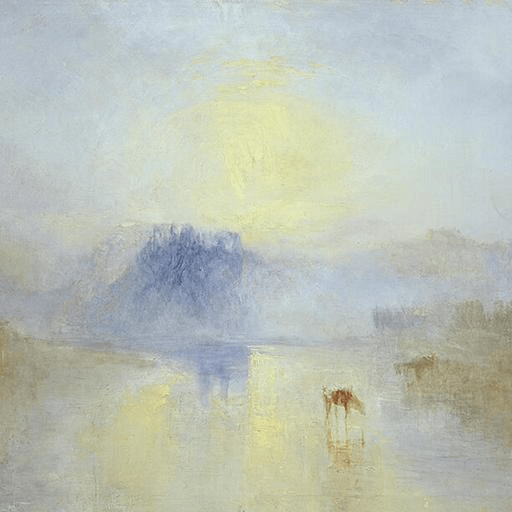

Hexagram 35 – Jin: Rising Light
Upper: Fire (☲) · Lower: Earth (☷)

Core Meaning
Your efforts are beginning to be seen, and opportunities are growing. This is a period of upward movement. Show your strengths, work with capable people, and advance in a clear and honest way.
“I move forward openly and let my growth be seen.”
Blessing
May your effort be recognized as you move steadily toward brighter ground.
Guidance by Life Area
Love
The relationship is warming and trust is growing. Show your intentions clearly and use steady actions to support what you say.
Show your intentions clearly:
- Plan ahead together.
- Support promises with steady action.
Career
You are in an upward phase at work. Show your results, accept more responsibility, and place yourself where opportunities can find you.
Show your results:
- Take on meaningful responsibility.
- Move up one solid step at a time.
Health
Your energy and overall condition may be improving. Use the momentum to establish routines that can continue after the good phase passes.
Use good momentum to build routines:
- Keep exercise and nutrition consistent.
- Let progress become normal.
Finances
Income or investments may be improving. Direct new gains toward savings and long-term goals while keeping your risk discipline.
Direct added income toward long-term goals:
- Keep risk controls in place.
- Set realistic growth targets.
Relationships
More people may be noticing and supporting you. Build useful connections and share what you can; progress becomes stronger when it benefits others too.
Build useful connections:
- Share resources and experience.
- Let your progress help others.